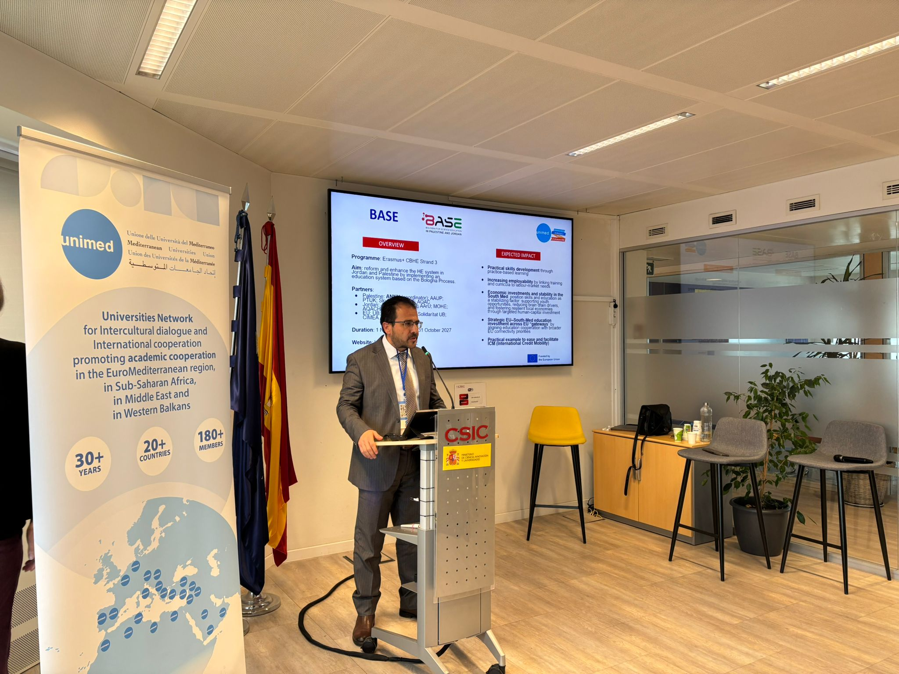
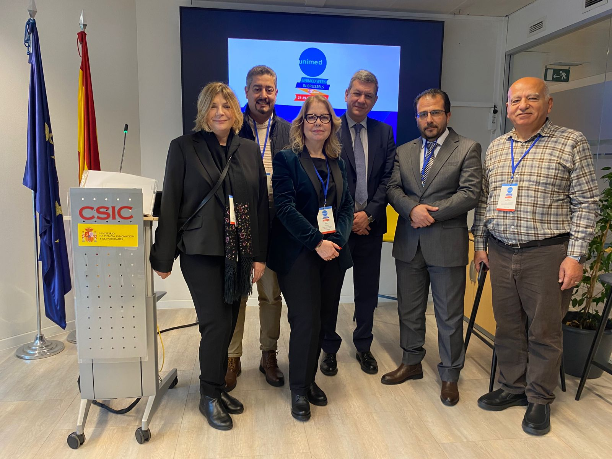

International Networks
Partnerships, Mediterranean cooperation, mobility, and externally funded academic initiatives.
International grants, research leadership, and higher education development
Director of the International Grants and Project Center at An-Najah National University, with experience in international relations and external affairs, research unit leadership, water resources, hydro-geochemistry, and higher education transformation.
Academic leader and researcher working across international grants, strategic partnerships, project management, water resources, and education modernization.
Prof. Dr. Saed K. Khayat serves as Director of the International Grants and Project Center at An-Najah National University in Nablus, Palestine. His CV also highlights roles in international relations and external affairs and as Director of a Research Unit. His work focuses on grant acquisition, proposal development, international project implementation, institutional compliance, strategic partnerships, and capacity building.
He has held senior leadership roles in international academic relations, planning, development, quality assurance, applied research, and technical and vocational education. His research background includes hydro-geochemistry, groundwater quality, isotope hydrogeology, water education, and environmental resources management.
His academic and institutional work connects universities, ministries, European partners, international agencies, and research centers through funded projects, training programs, and collaborative education initiatives.
Partnerships, Mediterranean cooperation, mobility, and externally funded academic initiatives.
Hydrochemistry, isotope hydrology, aquifer systems, water quality, and climate resilience.
Bologna Process alignment, micro-credentials, quality assurance, and institutional capacity building.
A concise view of academic, research, and international project contributions.
Leadership roles in universities, ministries, and international research institutions.
An-Najah National University, Nablus
Palestine Technical University Kadoorie
Palestine Technical University Kadoorie
Palestine Technical University Kadoorie
Helmholtz Centre for Environmental Research, Halle, Germany
Palestine Technical University Kadoorie
Helmholtz Centre for Environmental Research UFZ, Halle, Germany
Ministry of Higher Education and Scientific Research, Ramallah
Core academic and institutional themes connecting water science, environmental systems, and higher education development.
Priority areas where research, institutional leadership, and international cooperation meet.
Supporting competitive proposal development, institutional partnerships, Erasmus+, Horizon Europe, PRIMA, and regional cooperation frameworks.
Advancing Bologna Process alignment, micro-credentials, recognition of prior learning, digital learning, and quality assurance frameworks.
Supporting Bologna-aligned science education reform in Palestine and Jordan through international cooperation and institutional development.
Contributing to recognition, transparency, and higher education system innovation through regional and European cooperation frameworks.
Promoting interdisciplinary research on groundwater, hydrochemistry, isotopes, water security, and climate adaptation in Palestine and the Eastern Mediterranean.
Strengthening Euro-Mediterranean university cooperation, academic networking, and collaborative project development.
Expanding externally funded projects, institutional partnerships, and academic cooperation at An-Najah National University.
Developing international academic pathways and professional graduate partnerships in business, leadership, and institutional innovation.
Academic preparation, language proficiency, and digital and leadership competencies.
Doctor der Naturwissenschaften, Karlsruhe Institute of Technology, Germany. EQF Level 8. 2003 - 2005.
An-Najah National University, Nablus, Palestine. EQF Level 7. 1999 - 2001.
An-Najah National University, Nablus, Palestine. EQF Level 6. 1992 - 1996.
Selected funded projects, awards, institutional capacity building activities, and submitted international project history.
2024 - 2027. Elevating higher education in Palestine and Jordan through Bologna Process implementation. basejops.org
Regional cooperation activities focused on recognition, academic transparency, Euro-Mediterranean university networking, and international higher education development.
Strategic project development and international academic partnerships supporting institutional growth, professional education, and global engagement.
2024 - 2026. Enhancing governance and management of PhD programs at Palestinian higher education institutions. phdgov.ps
2018 - 2022. Innovations in water education, water security, and socio-economic development in the Eastern Mediterranean under climate change. wasec.just.edu.jo
2014 - 2019. Evaluating groundwater resources using environmental isotopes, Phase I and Phase II, projects PAL7004 and PAL7005.
2017 - 2019. Karstic aquifer of Hebron Area, Palestine; Palestinian-German academic cooperation funded by BMBF and the Palestinian Ministry of Higher Education.
2019 - Present. Capacity building in water, sanitation and hygiene, and climate-smart agriculture education and research in Palestine.
2023 - Present. Enhancing ICT competencies of early childhood educators at HEIs in MENA countries, co-funded by Erasmus+ CBHE.
2023 - Present. AgroTechnology VET Centres to network and train future farmers in Jordan and Palestine, co-funded by Erasmus+ CB-VET.


Graduate research supervision in water resources, environmental biotechnology, hydrology, salinity, and groundwater quality.
Journal publications, conference proceedings, and book chapters listed in the CV.
Examples from Erasmus+, Horizon, and youth/capacity-building calls listed in the CV.
Selected news items and public updates related to international projects, partnerships, and higher education transformation.
Key downloadable documents for academic, research, and international cooperation purposes.
Available for international academic cooperation, grant development, research partnerships, and higher education transformation projects.